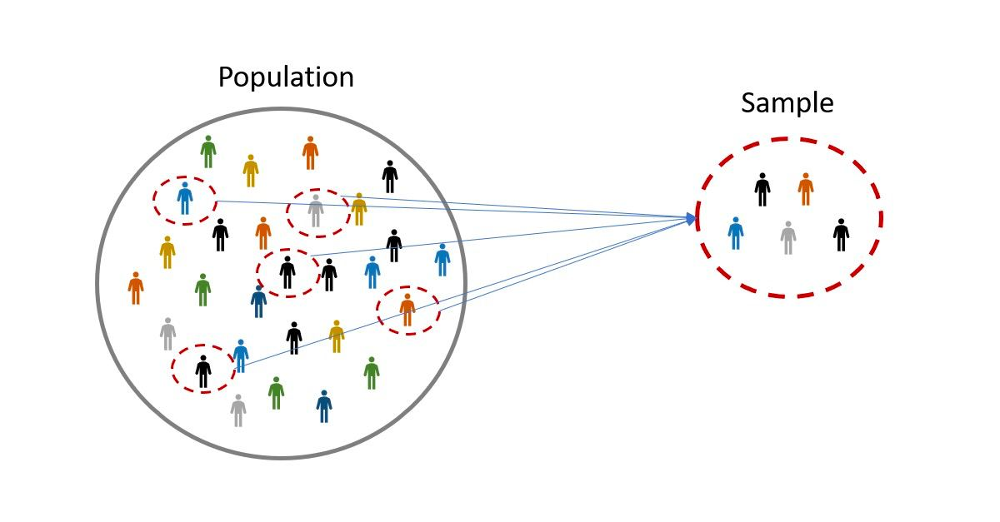

Main idea: packages
One of the key ideas of R is the use of packages: codes that other people have implemented to solve a problem.
Data Analysis in R
Put your spreadsheets aside
Mail: javiealv@pa.uc3m.es and javalv09@ucm.es.

Javier Álvarez Liébana from Carabanchel (Madrid).
Degree in Mathematics (UCM). PhD in Statistics (UGR).
In charge of data visualization and analysis for the Principality of Asturias (2021-2022) during the COVID pandemic.
Member of the Spanish Society of Statistics and OR and the Spanish Royal Mathematical Society.
.png)
Take away the fear of programming errors → learn to program by programming
Understanding basic R concepts from scratch → learning to abstract ideas and algorithms
Utility of programming → reproducible, transparent and maintainable workflows.
Introduction to analysis and preprocessing of data → {tidyverse}.
Handling advanced data types → {forcats}, {lubridate} and {purrr} packages
| LESSON | WEEK | DATE | TOPIC | SCRIPTS | EJ. | CASO PRÁCTICO | ENTREGA | ||
|---|---|---|---|---|---|---|---|---|---|
| 1 | S1 | 14 sep | R base programming | üìù | üíª üíª üíª | üê£ | |||
| 2 | S2 | 26 sep | First databases: tibbles and tidy data | üìù | üíª üíª | üê£ üê£ | |||
| 3 | S3 | 28 sep | Tidyverse: rows | üìù | üíª üíª üíª | üê£ | |||
| 4 | S4 | 5 oct | Tidyverse: columns | üìù | üíª | üê£ | |||
| 5 | S5 | 10 oct | Control flow structures and rmarkdown | üìù | üíª | üê£ | |||
| 6 | S6 | 19 oct | Tidyverse: summarising | üìù | üíª | üê£ | |||
| 7 | S7 | 24 oct | Functions | üìù | üíª | üê£ | |||
| 8 | S7 | 26 oct | Advance data types: list, factors and strings | üìù | üíª | üê£ | |||
| 9 | S10 | 16 nov | Advance data management | üìù | üíª | üê£ |
Individual Task I (10%): 24th October (R base, databases, tidydata)
Individual Task II (20%): 7th November (Tidyverse, control flow structures, functions)
Individual Task III (30%): 7th December (all contents)
In the slide menu (bottom left) you have an option to download them in pdf under Tools (tip: do not do this until the end of the course as they will be modified).
Introduction to R and RStudio ecosystems. Working with projects. First uses of functions and packages. Basic data types.
For the course the only requirements will be:
Internet connection (for downloading some data and packages).
Installing R: it will be our language. The download will be done (free of charge) from https://cran.r-project.org/


We will program as we write (English, for example) → R is the language
R)RStudio), to write it in.The R language will be our grammar and spelling (our rules).
Step 1: go to https://cran.r-project.org/ and select your operating system.
Step 2: for Mac just click on the .pkg file, and open it once downloaded. For Windows systems, click on install R for the first time and then on Download R for Windows. Once downloaded, open it like any other installation file.
Step 3: open the installation executable.
Warning
Whenever you download something from CRAN (either R itself or a package), make sure you have an internet connection.
To check that it has been installed correctly, after opening R, you should see a white screen similar to this one.
That “white screen” is called console and we can make a first use of it as a calculator.

To check that it has been installed correctly, after opening R, you should see a white screen similar to this one.
That “white screen” is called console and we can make a first use of it as a calculator.
Idea: we will define another variable called b and assign it the value 2.
Note that…
In R we use <- as an arrow: the variable to the left of the arrow is assigned the value to the right (e.g. a <- 1).
To check that it has been installed correctly, after opening R, you should see a white screen similar to this one.
That “white screen” is called console and we can make a first use of it as a calculator.
Idea: we will do the sum a + b and it will return its result.
RStudio will be the Word that we will use to write (what is known as an IDE: integrated development environment).
Step 1: go to the official RStudio website (now called Posit) and select the free download.
Step 2: select the executable that appears according to your operating system.
Step 3: after downloading the executable, open it like any other executable and let the installation finish.
When you open RStudio you will probably have three windows:
When you open RStudio you will probably have three windows:
When you open RStudio you will probably have three windows:
R is the main statistical language, created by and for statisticians, with 5 fundamental advantages over Excel:
Programming language: obviousness → replicable analysis.
Free of charge: the philosophy of the R community is code sharing under copyleft → ethical use of public money
Open source: not only is it free but it allows free access to other people’s code, even to own source code → flexibility and transparency
Modular language: there are other people’s code that we can reuse (almost 20 000 packages) → time-saving
High-level language
Automate → it will allow you to automate recurring tasks.
Replicability → you will be able to replicate your analysis always in the same way.
Flexibility → you will be able to adapt the software to your needs.
Transparency → it could be audited by the community.
One of the key ideas of R is the use of packages: codes that other people have implemented to solve a problem.

Once installed, there are two ways to use a package (bring it off the shelf)
library(), using the package name without quotes, we load into our session the whole book.During your learning process, it is going to be very common that things don’t go right the first time → you will make mistakes. Not only will it be important to assume this, but it is important to read the error messages to learn from them.

A script will be the document in which we program, our .doc file (here with .R extension) where we will write the commands. To open our first script, click in the menu on File < New File < R Script.
Be careful
It is important not to overuse the console: everything you do not write in a script, when you close, you will have lost it.
Now we have a fourth window: the window where we write our codes. How to run it?
Save current document.Ctrl+Enter.Execute your first script: create a script from scratch, program as indicated below and execute it (in the 3 possible ways)
üìù Add below another line to define a variable b with value 5. Then multiply both variables.
üìù Modify the code below to define two variables c and d, with values 3 and -1. Then split the variables.
üìù Assign a positive value to x and calculate its square root; assign another negative y and calculate its absolute value with the abs() function.
Note that…
Functions assqrt(), abs() or max() are what we call functions: lines of code that we have “encapsulated” under a name, and given some input arguments, execute the commands (a kind of shortcut).
In the same way that on the computer we usually work ordered by folders, in RStudio we can do the same to work in efficient way by creating projects.
A project will be a “folder” inside RStudio, so our working directory will automatically be the project folder itself (you can switch from one project to another with the top right menu).
We can create one in a new folder or in an existing folder.

What data type can we have in each cell of a database?
Are there variables beyond numbers?
Let us think, for example, of a person’s stored data:
TRUE if you are single or FALSE otherwise).The simplest data (we have already used it) will be the numeric variables
Let us imagine that, in addition to the age of a person, we want to store his/her name: now the variable will be of type character.
Strings variables are a type with which we obviously cannot perform arithmetic operations (other operations such as pasting or locating patterns can be performed).
Note that…
String variables are ALWAYS in quotes: TRUE (logical, binary value) is not the same as "TRUE" (char or string).
In R we denote as function a piece of encapsulated code under a name, and which depends on some input arguments. Our first function will be paste(): given two strings, it allows us to paste them together.

How to know what arguments a function needs? By typing ? paste in the console, you will get a help in the multi-purpose panel.
In this help panel, you will see in its header what arguments the function already has default assigned to it.
A more intuitive way to work with string variables is to use the {glue} package: the first thing to do is to “buy the book” (if we have never done it before). After that load the package
This package allows us to use variables inside strings. For example, “I am … years old”, where the age is stored in a variable.
Another fundamental type will be the logical or binary or boolean variables (just two values):
TRUE: true stored internally as a 1.FALSE: false stored internally as a 0.It can take a third value, NA or missing data, the acronym for not available.
Logical values are usually the result of evaluate logical conditions. For example, let us imagine we want to check if my name is Javi.
Note that…
It is not the same <- (assignment) as == (we are asking, it is a logical comparison).
In addition to “equal to” versus “different” comparisons, also order comparisons such as <, <=, > or >=.
Is the person less than 32 years old?
Age is greater than or equal to 38 years old?
A very special data type: the date type data.
It looks like a simple string but represents an instant in time. What should happen if we add a 1 to a date?
In this package we have very useful functions for handling dates:
today() allowes to directly obtain the current date.More documentation
You have a pdf summary of the most important packages in the corresponding folder on campus. See also https://posit.co/resources/cheatsheets/
Try to solve the following exercises without looking at the solutions
üìù Define a variable that stores your age (named as age) and another with your name (named as name).
üìù Define another variable named as siblings that answers the question ‚Äúdo you have siblings?‚Äù and another one with the date of your birth (named as birth_date).
üìù Define another variable with your last names (named as surnames) and use glue() to have a single variable full_name (separating first and last name by a comma).
Working with data usually implies having columns that represent variables: we will call vectors a concatenation of cells (values) of the same type.
The simplest way is using the c() command (c, concatenate), and just introduce its elements between parentheses, and separated by commas.
Tip
A single number x <- 1 (or x <- c(1)) is actually a vector of length one.

Many times we will want to create numeric sequences (for example, the days of the month). The seq(start, end) command allows us to create a sequence from a start element to an end element, advance one at a time.
[1] 1 2 3 4 5 6 7 8 9 10 11 12 13 14 15 16 17 18 19 20 21 22 23 24 25
[26] 26 27 28 29 30 31We can also define other type of discretization step between consecutives
[1] 1.0 1.5 2.0 2.5 3.0 3.5 4.0 4.5 5.0 5.5 6.0 6.5 7.0In other cases we will be interested in defining a sequence with a specific length
A vector is a concatenation of same type elements, but they do not necessarily have to be numerical types. Let us create an example sentence.
What will happen if we concatenate elements of different type?
Notice that since they are all of the same type, what R does is convert everything to character, violating data integrity
With numeric vectors we can do the same arithmetic operations as with numbers → a number is a vector (of length one).
What will happen if we add or subtract a value to a vector?
Vectors can also interact with each other, so we can define, for example, sums of vectors (element by element)
Since the operation (e.g., a sum) is performed element by element, what will happen if let’s add two vectors of different length?
A very common operation is to ask data by using logical conditions. For example, if we define a vector of temperatures….
What days was it less than 22 degrees
It will return a logical vector, depending on whether each element fulfills or not the requested condition (of equal length to the requested vector).
Logical conditions can be combined in two ways:
&) to return a TRUE.|).We can also use statistical operations such as sum() which, given a vector, returns the sum of all its elements.
What happens when a single value is missing?
As we have mentioned, logical values are stored internally as 0 and 1, so we can use them in arithmetic operations.
For example, if we want to find the number of elements that fulfill a condition (for example, “less than 3”), those that do will be assigned a 1 (TRUE) and those that don’t a 0 (FALSE), so we only need to add this logical vector to obtain the number of elements that fulfill a condition.
Other common operations are average, median, percentiles, etc.
Other common operations are average, median, percentiles, etc.
Another very common operation is to access elements of it. The simplest way is to use the [i] operator (access the i-th element).
Since a number is just a vector of length one, this operation can also be applied using a vector of indexes to select
[1] "Hi" "how" "you"Tip
To access the last one, without worrying about which one, we can pass as index the length x[length(x)].
Other times we will not want to select but delete some elements. We will have to repeat the same operation but with the sign - in front: the operator [-i] does not select the i-th element of the vector but discards it.
Many times we will want to select or eliminate based on logical conditions, depending on the values, so we will pass as index the condition itself (remember, x < 2 returns a logical vector).
Finally, a common action is to sort values:
sort(): returns the sorted vector. By default from smallest to largest but with decreasing = TRUE we can change it.[1] 7 20 23 25 33 41 65 77 81[1] 81 77 65 41 33 25 23 20 7Try to solve the following exercises without looking at the solutions
üìù Define the vector x as the concatenation of the first 5 odd numbers, and calculate their sum.
üìù Get the elements of x greater than 4. Calculate the number of elements of x greater than 4.
üìù Calculate the vector 1/x and obtain the ordered version (from smallest to largest).
üìù Find of the vector x the elements greater (strictly) than 1 and less (strictly) than 7. Find a way to find out if all the elements are positive or not.
üìù Given the vector x <- c(1, -5, 8, NA, 10, -3, 9), extract the elements that occupy the places 1, 2, 5, 6. Removes from the vector the second element. After removing it, compute its sum and mean
In the {datasets} package we have several datasets, and one of them is named as airquality. I have extracted below 3 variables from this dataset
date variable with the date of each record (combining year, month and day).temp_celsius with the temperature in ºC (units of the original variable are in Fahrenheit)First databases: tibbles as standard type for databases. R base vs tidyverse. Pipe operator. Principles of tidy data: tidy vs messy data. Pivoting datasets
In data science we usually have several variables for each individual: we need a “table” to collect them. The most immediate option is matrices: a concatenation of variables of same type and equal length.
Let us imagine that we have heights and weights of 4 people. How to create a dataset with those variables?
cbind() allow us to concatenate vectors by columnsrbind() function (although it is recommended to have each variable in column and individuals in row).View().t(). [,1] [,2] [,3] [,4] [,5]
[1,] 1 4 7 10 13
[2,] 2 5 8 11 14
[3,] 3 6 9 12 15We can also apply apply functions by columns/rows (avoiding loops) with apply(), taking as input arguments
MARGIN = 1 by rows, MARGIN = 2 by columns)We won’t go deeper any further since our goal is to have variables of the same length but different types (but know they exist).
Try to solve the following exercises without looking at the solutions
üìù Modify the code below to define an x matrix of ones with 3 rows and 7 columns.
üìù Add a 1 to each number in the matrix above, and divide the result by 5. After that, calculate its transpose and obtain its dimensions
üìù Define matrix x <- matrix(1:12, nrow = 4). Get the first row, the third column, and the element (4, 1).
üìù With the above matrix defined as x <- matrix(1:12, nrow = 4), calculate the mean of all elements, the mean of each row and the mean of each column. Calculate the sum of each row and each column.
Matrices have the same problem as vectors: if we collect data of different types together, data integrity is compromised as it converts them into.
In order to work with variables of different type we have what is known as data.frame: concatenation of variables of equal length but may be of different type.
Since a data.frame is already a database the variables are not mere mathematical vectors: they have a meaning and we can (must) name them.
We have our first dataset! You can view it by typing its name in the console or with View(table).
If we want to access its elements, we can, as in matrices (although it is not recommended): now we have two indexes (rows and columns, leaving free the one we don’t use)
ags single name b_date
2 24 NA laura 1992-04-01[1] "javi" "laura" "lucía"[1] 24
It also has advantages of a database : we can access variables by name (recommendable since variables can change position), putting the name of the table followed by the symbol $ (with the tab, a menu of columns to choose from will appear).
names(): show us the names of the variables.If we have one already created and we want to add a column it is as simple as using the data.frame() function we have already seen to concatenate the column. Let’s add for example a new variable, the number of siblings of each individual.
Tables in data.frame format have some limitations
The main one is that does not allow recursion: imagine we define a database with heights and weights, and we want a third variable with BMI.
Error in data.frame(height = c(1.7, 1.8, 1.6), weight = c(80, 75, 70), : object 'weight' not foundtable <- tibble("height" = c(1.7, 1.8, 1.6), "weight" = c(80, 75, 70),
"BMI" = weight / (height^2))
table# A tibble: 3 × 3
height weight BMI
<dbl> <dbl> <dbl>
1 1.7 80 27.7
2 1.8 75 23.1
3 1.6 70 27.3Tables in tibble format will allow a more agile, efficient and coherent data management, with 4 main advantages:
tribble().Tip
The {datapasta} package allows us to copy and paste tables from web pages and simple documents.
Try to solve the following exercises without looking at the solutions
üìù Load from the {datasets} package the airquality dataset (New York air quality variables from May through September 1973). Is the airquality dataset of type tibble? If not, convert it to tibble (look in the package documentation at https://tibble.tidyverse.org/index.html).
üìù Once converted into tibble get the name of the variables and the dimensions of the data set. How many variables are there? How many days have been measured?
üìù Select those data that are not from July or August.
üìù Modify the following code to keep only the ozone and temperature variables.
R by default the operations are done element by elementFrom the {Biostatistics} package we will use the pinniped data set.
tibble (rename with pinniped_tb).Phoca or not.If you know any other programming language, you will be surprised that we have not yet talked about common concepts such as
For loops: repeat a code a fixed number of iterations.
while loops: repeat a code until a condition is verified.
if-else structures: control flow structures to decide where the code walks depending on the value of variables.
And although knowing these structures can be interesting at some point, in most of the times we will be able to avoid them (specially loops).


{tidyverse} is an “universe” of packages to ensure an efficient, coherent and lexicographically simple to understand workflow based on the idea that our data is clean and tidy
{tibble}: optimizing data.frame{tidyr}: data cleaning{readr}: loading rectangular data (.csv){dplyr}: grammar for debugging{stringr}: text handling{ggplot2}: data visualization{tidymodels}: modeling/predictionWe also have the {purrr} packages for list management, {forcast} for qualitative variables, {lubridate} for dates, {readxl} for importing .xls and .xlsx files, {rvest} for web scraping and {rmarkdown} for reporting results.
{tibble}: optimizing data.frame{tidyr}: data cleaning{readr}: loading rectangular data (.csv){dplyr}: grammar for debugging{stringr}: text handling{ggplot2}: data visualization{tidymodels}: modeling/predictionWe also have the {purrr} packages for list management, {forcast} for qualitative variables, {lubridate} for dates, {readxl} for importing .xls and .xlsx files, {rvest} for web scraping and {rmarkdown} for reporting results.
Tidy datasets are all alike, but every messy dataset is messy in its own way (Hadley Wickham, Chief Scientist en RStudio)
TIDYVERSE
The universe of {tidyverse} packages is based on the idea introduced by Hadley Wickham (the God I pray to) of standardize formatting data to
The first thing will therefore be to understand what the tidydata sets are, since the whole {tidyverse} is based on the data being standardized.

In {tidyverse} the pipe operator, defined as |> (ctrl+shift+M), will be key: it will be a pipe that traverses the data and transforms it.
Note that…
Since version 4.1.0 of R we have |>, a native pipe available outside tidyverse, replacing the old pipe %>% which depended on the {magrittr} package (quite problematic).
The main advantage is that the code is very readable (almost literal) and you can do large operations on the data with very little code.
But what does the non-tidy data look like? Let’s load the table4a table from the {tidyr} package (we already have it loaded from the tidyverse environment).
# A tibble: 3 × 3
country `1999` `2000`
<chr> <dbl> <dbl>
1 Afghanistan 745 2666
2 Brazil 37737 80488
3 China 212258 213766What could be wrong?
❎ Each row represents two observations (1999 and 2000) → columns 1999 and 2000 should actually themselves be values of a variable and not column names.
We will include a new column that stores the year and another one that stores the value of the variable of interest in each of those years. And we will do it with the pivot_longer() function: pivot the table to long format

cols: name of the variables to be pivotednames_to: name of the new variable to which we send the header of the table (the names).values_to: name of the new variable to which we are going to send the data.Let us see another example in table2
# A tibble: 12 × 4
country year type count
<chr> <dbl> <chr> <dbl>
1 Afghanistan 1999 cases 745
2 Afghanistan 1999 population 19987071
3 Afghanistan 2000 cases 2666
4 Afghanistan 2000 population 20595360
5 Brazil 1999 cases 37737
6 Brazil 1999 population 172006362
7 Brazil 2000 cases 80488
8 Brazil 2000 population 174504898
9 China 1999 cases 212258
10 China 1999 population 1272915272
11 China 2000 cases 213766
12 China 2000 population 1280428583What could be wrong?
# A tibble: 12 × 4
country year type count
<chr> <dbl> <chr> <dbl>
1 Afghanistan 1999 cases 745
2 Afghanistan 1999 population 19987071
3 Afghanistan 2000 cases 2666
4 Afghanistan 2000 population 20595360
5 Brazil 1999 cases 37737
6 Brazil 1999 population 172006362
7 Brazil 2000 cases 80488
8 Brazil 2000 population 174504898
9 China 1999 cases 212258
10 China 1999 population 1272915272
11 China 2000 cases 213766
12 China 2000 population 1280428583❎ Each observation is divided into two rows → the records with the same year should be the same
We will do will be the opposite: with pivot_wider() we will widen the table
# A tibble: 6 × 4
country year cases population
<chr> <dbl> <dbl> <dbl>
1 Afghanistan 1999 745 19987071
2 Afghanistan 2000 2666 20595360
3 Brazil 1999 37737 172006362
4 Brazil 2000 80488 174504898
5 China 1999 212258 1272915272
6 China 2000 213766 1280428583Let us see another example in table3
# A tibble: 6 × 3
country year rate
<chr> <dbl> <chr>
1 Afghanistan 1999 745/19987071
2 Afghanistan 2000 2666/20595360
3 Brazil 1999 37737/172006362
4 Brazil 2000 80488/174504898
5 China 1999 212258/1272915272
6 China 2000 213766/1280428583What could be wrong?
❎ Each cell contains several values
What we will do is make use of the separate() function to send separate each value to a different column.
# A tibble: 6 × 4
country year cases pop
<chr> <dbl> <chr> <chr>
1 Afghanistan 1999 745 19987071
2 Afghanistan 2000 2666 20595360
3 Brazil 1999 37737 172006362
4 Brazil 2000 80488 174504898
5 China 1999 212258 1272915272
6 China 2000 213766 1280428583# A tibble: 6 × 4
country year cases pop
<chr> <dbl> <chr> <chr>
1 Afghanistan 1999 745 19987071
2 Afghanistan 2000 2666 20595360
3 Brazil 1999 37737 172006362
4 Brazil 2000 80488 174504898
5 China 1999 212258 1272915272
6 China 2000 213766 1280428583Notice that the data, although it has separated them, kept them as text when in fact they should be numeric variables. For this we can add the optional argument convert = TRUE. . . .
# A tibble: 6 × 4
country year cases pop
<chr> <dbl> <int> <int>
1 Afghanistan 1999 745 19987071
2 Afghanistan 2000 2666 20595360
3 Brazil 1999 37737 172006362
4 Brazil 2000 80488 174504898
5 China 1999 212258 1272915272
6 China 2000 213766 1280428583Let us see the last example in table5
# A tibble: 6 × 4
country century year rate
<chr> <chr> <chr> <chr>
1 Afghanistan 19 99 745/19987071
2 Afghanistan 20 00 2666/20595360
3 Brazil 19 99 37737/172006362
4 Brazil 20 00 80488/174504898
5 China 19 99 212258/1272915272
6 China 20 00 213766/1280428583What could be wrong?
❎ We have same values divided into two columns
We will use unite() to unite the values of century and year in the same column
# A tibble: 6 × 3
country year_whole rate
<chr> <chr> <chr>
1 Afghanistan 1999 745/19987071
2 Afghanistan 2000 2666/20595360
3 Brazil 1999 37737/172006362
4 Brazil 2000 80488/174504898
5 China 1999 212258/1272915272
6 China 2000 213766/1280428583Try to solve the following exercises without looking at the solutions
üìù Take a look at table table4b in package {tidyr}. Is it tidydata? If not, what is wrong, how to convert it to tidy data in case it is not already?
üìù Take a look at table relig_income in package {tidyr}. Is it tidydata? If not, what is wrong, how to convert it to tidy data in case it is not already?
In the {tidyr} package we have the who dataset (World Health Organization dataset).
Handling data by rows
{tibble}: optimizing data.frame{tidyr}: data cleaning{readr}: loading rectangular data (.csv){dplyr}: grammar for debugging{stringr}: text handling{ggplot2}: data visualization{tidymodels}: modeling/predictionWe also have the {purrr} packages for list management, {forcast} for qualitative variables, {lubridate} for dates, {readxl} for importing .xls and .xlsx files, {rvest} for web scraping and {rmarkdown} for reporting results.
Within {tidyverse}, we will use the {dplyr} package for the preprocessing and debugging of databases.
All the debugging process that we are going to perform is on the assumption that our data is in tidydata format
Remember that in {tidyverse} the pipe operator defined as |> (ctrl+shift+M) will be crucial: it will be a pipe that traverses the data and transforms it.
One of the most common operations is what is known in statistics as sampling: a selection or filtering of records (a subsample).

filter())slice())slice_sample())group_by() + slice_sample())The simplest one is when filter records based on some logical condition: with filter() only individuals that verify certain conditions will be selected (non-random sampling by conditions).
==, !=: equal or different to (|> filter(variable == "a"))>, <: greater or less than (|> filter(variable < 3))>=, <=: greater or equal or less or equal to (|> filter(variable >= 5))%in%: values belong to a valid set of options (|> filter(variable %in% c("blue", "green")))between(variable, val1, val2): if continuous numerical values are within a range (|> filter(between(variable, 160, 180)))These logical conditions can be combined in different ways (and, or, or mutually exclusive).
Important
Remember that inside filter() there must always be something that returns a vector of logical values.
How would you go about… filter the characters with brown eyes?
What kind of variable is it? –> The variable eye_color is qualitative so it is represented by texts. . . .
# A tibble: 21 × 14
name height mass hair_color skin_color eye_color birth_year sex gender
<chr> <int> <dbl> <chr> <chr> <chr> <dbl> <chr> <chr>
1 Leia Or… 150 49 brown light brown 19 fema… femin…
2 Biggs D… 183 84 black light brown 24 male mascu…
3 Han Solo 180 80 brown fair brown 29 male mascu…
4 Yoda 66 17 white green brown 896 male mascu…
5 Boba Fe… 183 78.2 black fair brown 31.5 male mascu…
6 Lando C… 177 79 black dark brown 31 male mascu…
7 Arvel C… NA NA brown fair brown NA male mascu…
8 Wicket … 88 20 brown brown brown 8 male mascu…
9 Quarsh … 183 NA black dark brown 62 <NA> <NA>
10 Shmi Sk… 163 NA black fair brown 72 fema… femin…
# ℹ 11 more rows
# ℹ 5 more variables: homeworld <chr>, species <chr>, films <list>,
# vehicles <list>, starships <list>How would you go about… filter the characters without brown eyes?
# A tibble: 66 × 14
name height mass hair_color skin_color eye_color birth_year sex gender
<chr> <int> <dbl> <chr> <chr> <chr> <dbl> <chr> <chr>
1 Luke Sk… 172 77 blond fair blue 19 male mascu…
2 C-3PO 167 75 <NA> gold yellow 112 none mascu…
3 R2-D2 96 32 <NA> white, bl… red 33 none mascu…
4 Darth V… 202 136 none white yellow 41.9 male mascu…
5 Owen La… 178 120 brown, gr… light blue 52 male mascu…
6 Beru Wh… 165 75 brown light blue 47 fema… femin…
7 R5-D4 97 32 <NA> white, red red NA none mascu…
8 Obi-Wan… 182 77 auburn, w… fair blue-gray 57 male mascu…
9 Anakin … 188 84 blond fair blue 41.9 male mascu…
10 Wilhuff… 180 NA auburn, g… fair blue 64 male mascu…
# ℹ 56 more rows
# ℹ 5 more variables: homeworld <chr>, species <chr>, films <list>,
# vehicles <list>, starships <list>How would you go about… filter the characters with brown or blue eyes? . . .
# A tibble: 40 × 14
name height mass hair_color skin_color eye_color birth_year sex gender
<chr> <int> <dbl> <chr> <chr> <chr> <dbl> <chr> <chr>
1 Luke Sk… 172 77 blond fair blue 19 male mascu…
2 Leia Or… 150 49 brown light brown 19 fema… femin…
3 Owen La… 178 120 brown, gr… light blue 52 male mascu…
4 Beru Wh… 165 75 brown light blue 47 fema… femin…
5 Biggs D… 183 84 black light brown 24 male mascu…
6 Anakin … 188 84 blond fair blue 41.9 male mascu…
7 Wilhuff… 180 NA auburn, g… fair blue 64 male mascu…
8 Chewbac… 228 112 brown unknown blue 200 male mascu…
9 Han Solo 180 80 brown fair brown 29 male mascu…
10 Jek Ton… 180 110 brown fair blue NA male mascu…
# ℹ 30 more rows
# ℹ 5 more variables: homeworld <chr>, species <chr>, films <list>,
# vehicles <list>, starships <list>Note that %in% is equivalent to concatenating several == with a conjunction or (|)
# A tibble: 40 × 14
name height mass hair_color skin_color eye_color birth_year sex gender
<chr> <int> <dbl> <chr> <chr> <chr> <dbl> <chr> <chr>
1 Luke Sk… 172 77 blond fair blue 19 male mascu…
2 Leia Or… 150 49 brown light brown 19 fema… femin…
3 Owen La… 178 120 brown, gr… light blue 52 male mascu…
4 Beru Wh… 165 75 brown light blue 47 fema… femin…
5 Biggs D… 183 84 black light brown 24 male mascu…
6 Anakin … 188 84 blond fair blue 41.9 male mascu…
7 Wilhuff… 180 NA auburn, g… fair blue 64 male mascu…
8 Chewbac… 228 112 brown unknown blue 200 male mascu…
9 Han Solo 180 80 brown fair brown 29 male mascu…
10 Jek Ton… 180 110 brown fair blue NA male mascu…
# ℹ 30 more rows
# ℹ 5 more variables: homeworld <chr>, species <chr>, films <list>,
# vehicles <list>, starships <list>How would you go about… filter the characters are between 120 and 160 cm?
What type of variable is it? –> The variable height is a continuous quantitative variable so we must filter by ranges of values (intervals) –> we will use between().
# A tibble: 6 × 14
name height mass hair_color skin_color eye_color birth_year sex gender
<chr> <int> <dbl> <chr> <chr> <chr> <dbl> <chr> <chr>
1 Leia Org… 150 49 brown light brown 19 fema… femin…
2 Mon Moth… 150 NA auburn fair blue 48 fema… femin…
3 Nien Nunb 160 68 none grey black NA male mascu…
4 Watto 137 NA black blue, grey yellow NA male mascu…
5 Gasgano 122 NA none white, bl… black NA male mascu…
6 Cordé 157 NA brown light brown NA fema… femin…
# ℹ 5 more variables: homeworld <chr>, species <chr>, films <list>,
# vehicles <list>, starships <list>How would you… filter characters that have brown eyes and are not human?
# A tibble: 3 × 14
name height mass hair_color skin_color eye_color birth_year sex gender
<chr> <int> <dbl> <chr> <chr> <chr> <dbl> <chr> <chr>
1 Yoda 66 17 white green brown 896 male mascu…
2 Wicket S… 88 20 brown brown brown 8 male mascu…
3 Eeth Koth 171 NA black brown brown NA male mascu…
# ℹ 5 more variables: homeworld <chr>, species <chr>, films <list>,
# vehicles <list>, starships <list>How would you… filter characters that have eyes and are not human, or are over 60 years old? Think it through: the parentheses are important: \((a+b)*c\) is not the same as \(a+(b*c)\).
# A tibble: 18 × 14
name height mass hair_color skin_color eye_color birth_year sex gender
<chr> <int> <dbl> <chr> <chr> <chr> <dbl> <chr> <chr>
1 C-3PO 167 75 <NA> gold yellow 112 none mascu…
2 Wilhuff… 180 NA auburn, g… fair blue 64 male mascu…
3 Chewbac… 228 112 brown unknown blue 200 male mascu…
4 Jabba D… 175 1358 <NA> green-tan… orange 600 herm… mascu…
5 Yoda 66 17 white green brown 896 male mascu…
6 Palpati… 170 75 grey pale yellow 82 male mascu…
7 Wicket … 88 20 brown brown brown 8 male mascu…
8 Qui-Gon… 193 89 brown fair blue 92 male mascu…
9 Finis V… 170 NA blond fair blue 91 male mascu…
10 Quarsh … 183 NA black dark brown 62 <NA> <NA>
11 Shmi Sk… 163 NA black fair brown 72 fema… femin…
12 Mace Wi… 188 84 none dark brown 72 male mascu…
13 Ki-Adi-… 198 82 white pale yellow 92 male mascu…
14 Eeth Ko… 171 NA black brown brown NA male mascu…
15 Cliegg … 183 NA brown fair blue 82 male mascu…
16 Dooku 193 80 white fair brown 102 male mascu…
17 Bail Pr… 191 NA black tan brown 67 male mascu…
18 Jango F… 183 79 black tan brown 66 male mascu…
# ℹ 5 more variables: homeworld <chr>, species <chr>, films <list>,
# vehicles <list>, starships <list>There is a special filter for one of the most common operations in debugging: remove absent. For this we can use inside a filter is.na(), which returns TRUE/FALSE depending on whether it is absent, or ….
Use drop_na(): if no variable is specified, it removes records with absent in any variable. Later we will see how to impute those missing ones
# A tibble: 7 × 4
name mass height hair_color
<chr> <dbl> <int> <chr>
1 Luke Skywalker 77 172 blond
2 C-3PO 75 167 <NA>
3 R2-D2 32 96 <NA>
4 Darth Vader 136 202 none
5 Leia Organa 49 150 brown
6 Owen Lars 120 178 brown, grey
7 Beru Whitesun lars 75 165 brown # A tibble: 7 × 4
name mass height hair_color
<chr> <dbl> <int> <chr>
1 Luke Skywalker 77 172 blond
2 Darth Vader 136 202 none
3 Leia Organa 49 150 brown
4 Owen Lars 120 178 brown, grey
5 Beru Whitesun lars 75 165 brown
6 Biggs Darklighter 84 183 black
7 Obi-Wan Kenobi 77 182 auburn, whiteTry to solve the following exercises without looking at the solutions
üìù Select from the starwars dataset only those characters that are androids or whose species value is unknown.
üìù Select from the starwars dataset only the characters whose weight is between 65 and 90 kg.
üìù After clearing missing data in all variables, select from the starwars dataset only the characters that are human and come from Tatooine.
üìù Select, from the original starwars dataset, non-human characters, male in sex and measuring between 120 and 170 cm, or characters with brown or red eyes.
üìù Check information about the str_detect() function ({stringr} package loaded in {tidyverse}). Tip: test the functions you are going to use with some test vector beforehand so that you can check how they work. After you know what it does, filter out only those characters with the last name Skywalker.
Sometimes we may be interested in performing a non-random discretionary sampling, or in other words, filter by position: with slice(positions) we can select specific rows by passing as argument a index vector.
# A tibble: 1 × 4
name height mass hair_color
<chr> <int> <dbl> <chr>
1 Luke Skywalker 172 77 blond # A tibble: 4 × 8
name height mass hair_color skin_color eye_color birth_year sex
<chr> <int> <dbl> <chr> <chr> <chr> <dbl> <chr>
1 C-3PO 167 75 <NA> gold yellow 112 none
2 Beru Whitesun l… 165 75 brown light blue 47 fema…
3 Obi-Wan Kenobi 182 77 auburn, w… fair blue-gray 57 male
4 Qui-Gon Jinn 193 89 brown fair blue 92 male We have some default options:
slice_head(n = ...) and slice_tail(n = ...) we can get the header and tail of the table.# A tibble: 2 × 4
name height mass hair_color
<chr> <int> <dbl> <chr>
1 Luke Skywalker 172 77 blond
2 C-3PO 167 75 <NA> We have some default options:
slice_max() and slice_min() we get the rows with smallest/largest value of a variable (if tie, all unless with_ties = FALSE) that we indicate in order_by = ....# A tibble: 2 × 4
name height mass hair_color
<chr> <int> <dbl> <chr>
1 Ratts Tyerell 79 15 none
2 Yoda 66 17 white The so-called simple random sampling is based on selecting individuals randomly, so that each one has certain probabilities of being selected. With slice_sample(n = ...) we can randomly extract n (a priori equiprobable) records.
# A tibble: 2 × 14
name height mass hair_color skin_color eye_color birth_year sex gender
<chr> <int> <dbl> <chr> <chr> <chr> <dbl> <chr> <chr>
1 Dud Bolt 94 45 none blue, grey yellow NA male mascul…
2 Lama Su 229 88 none grey black NA male mascul…
# ℹ 5 more variables: homeworld <chr>, species <chr>, films <list>,
# vehicles <list>, starships <list>Important
«Randomness» does not imply equiprobable: a normal die is just as random as a trick die. There are no things “more random” than others, they simply have different underlying probability laws.
We can also indicate the proportion of data to be sampled (instead of the number) and if we want it to be with replacement (that can be repeated).
# 5% de registros aleatorios con reemplazamiento
starwars |>
slice_sample(prop = 0.05, replace = TRUE)# A tibble: 4 × 14
name height mass hair_color skin_color eye_color birth_year sex gender
<chr> <int> <dbl> <chr> <chr> <chr> <dbl> <chr> <chr>
1 Beru Whi… 165 75 brown light blue 47 fema… femin…
2 Qui-Gon … 193 89 brown fair blue 92 male mascu…
3 Palpatine 170 75 grey pale yellow 82 male mascu…
4 Leia Org… 150 49 brown light brown 19 fema… femin…
# ℹ 5 more variables: homeworld <chr>, species <chr>, films <list>,
# vehicles <list>, starships <list>As we said, “random” is not the same as “equiprobable”, so we can pass a probability vector. For example, let’s force that it is very improbable to draw a row other than the first two rows
# A tibble: 2 × 14
name height mass hair_color skin_color eye_color birth_year sex gender
<chr> <int> <dbl> <chr> <chr> <chr> <dbl> <chr> <chr>
1 C-3PO 167 75 <NA> gold yellow 112 none mascu…
2 Luke Sky… 172 77 blond fair blue 19 male mascu…
# ℹ 5 more variables: homeworld <chr>, species <chr>, films <list>,
# vehicles <list>, starships <list># A tibble: 2 × 14
name height mass hair_color skin_color eye_color birth_year sex gender
<chr> <int> <dbl> <chr> <chr> <chr> <dbl> <chr> <chr>
1 C-3PO 167 75 <NA> gold yellow 112 none mascu…
2 Luke Sky… 172 77 blond fair blue 19 male mascu…
# ℹ 5 more variables: homeworld <chr>, species <chr>, films <list>,
# vehicles <list>, starships <list>The slice_sample() function is simply a {tidyverse} integration of the basic R function known as sample() that allows us to sample elements
The previous option generates events of a random variable equiprobable but as before, we can assign a vector of probabilities or mass function to it with the argument prob = ....
How would you make the following statement?
Supongamos que en una ciudad se han estudiado los perfiles de votantes en parejas heterosexuales. Sean las variables aleatorias \(X_m\) y \(X_h\) tal que \(X_m=1\) si una vota a un partido X, \(X_m=0\) si no, \(X_h=1\) si un hombre vota a un partido X y \(X_p=0\) si no. El modelo teórico asociado a este tipo de electorado indica que la distribución conjunta viene dada por \(P(X_m = 1, X_h=1)=0.02\), \(P(X_m = 1, X_h=0)=0.08\), \(P(X_m = 1, X_h=0)=0.1\) y \(P(X_m = 0, X_h=0)=0.8\)
Generates a sample of size \(n = 1000\) (support "10", "01", "00" and "11") using sample().
Try to solve the following exercises without looking at the solutions
üìù Select only the characters that are human and brown-eyed, then sort them in descending height and ascending weight.
üìù Randomly draws 10 characters but in such a way that the probability of each character being drawn is proportional to its weight (heavier, more likely).
We can also order rows according to some variable with arrange().
# A tibble: 5 × 6
name height mass hair_color skin_color eye_color
<chr> <int> <dbl> <chr> <chr> <chr>
1 Ratts Tyerell 79 15 none grey, blue unknown
2 Yoda 66 17 white green brown
3 Wicket Systri Warrick 88 20 brown brown brown
4 R2-D2 96 32 <NA> white, blue red
5 R5-D4 97 32 <NA> white, red red By default, arranging is done from lowest to highest but we can reverse the order with desc().
# A tibble: 5 × 3
name height mass
<chr> <int> <dbl>
1 Yarael Poof 264 NA
2 Tarfful 234 136
3 Lama Su 229 88
4 Chewbacca 228 112
5 Roos Tarpals 224 82Many times we will need to make sure that there are no duplicates in some variable (DNI) and we can delete duplicate rows with distinct().
# A tibble: 5 × 1
sex
<chr>
1 male
2 none
3 female
4 hermaphroditic
5 <NA> To keep all variables we will use .keep_all = TRUE.
# A tibble: 3 × 14
name height mass hair_color skin_color eye_color birth_year sex gender
<chr> <int> <dbl> <chr> <chr> <chr> <dbl> <chr> <chr>
1 Luke Sky… 172 77 blond fair blue 19 male mascu…
2 C-3PO 167 75 <NA> gold yellow 112 none mascu…
3 Leia Org… 150 49 brown light brown 19 fema… femin…
# ℹ 5 more variables: homeworld <chr>, species <chr>, films <list>,
# vehicles <list>, starships <list>Finally, we can bind new rows with bind_rows() with new observations in table (if columns do not match fill with missing data)
# A tibble: 2 × 2
names ages
<chr> <dbl>
1 javi 33
2 laura 50Try to solve the following exercises without looking at the solutions
üìù To find out what unique values are in the hair color, remove duplicates of the hair_color variable by first removing the missing ones from the hair_color variable.
üìù Just considering the characters that are human and taller than 160 cm, eliminate duplicates in eye color, eliminate missing data in weight, select the 3 tallest, and order from tallest to shortest in weight. Return the table.
The key to {tidyverse} is the legibility: it is very important that the code is understood, for our future self but also for the algorithmic transparency towards the others
For example: we will remove absent from the weight variable, we will filter the human characters and height higher than 140cm, without duplicates in the hair color, extracting the 5 tallest and obtaining 2 random characters finally.
We are going to use the biopsy dataset that can be found in the dataset aggregator https://vincentarelbundock.github.io/Rdatasets/index.html. The dataset contains data from 699 patients who underwent a breast biopsy, obtaining 11 variables (one id and 10 scales measured from 1 to 10).
You can see the documentation at https://vincentarelbundock.github.io/Rdatasets/doc/MASS/biopsy.html . . .
Load the dataset from the {MASS} package. . . .
The variable ID should be the identifier of each record: eliminate duplicates for that variable of the previous dataset.
V9 with value 4 or lower, further deleting any records containing missing data in any of the variables.V1 and, in case of a tie, from lowest to highest by the variable V2.Javier Álvarez Liébana • Master in Computational Social Sciences • 2023-2024